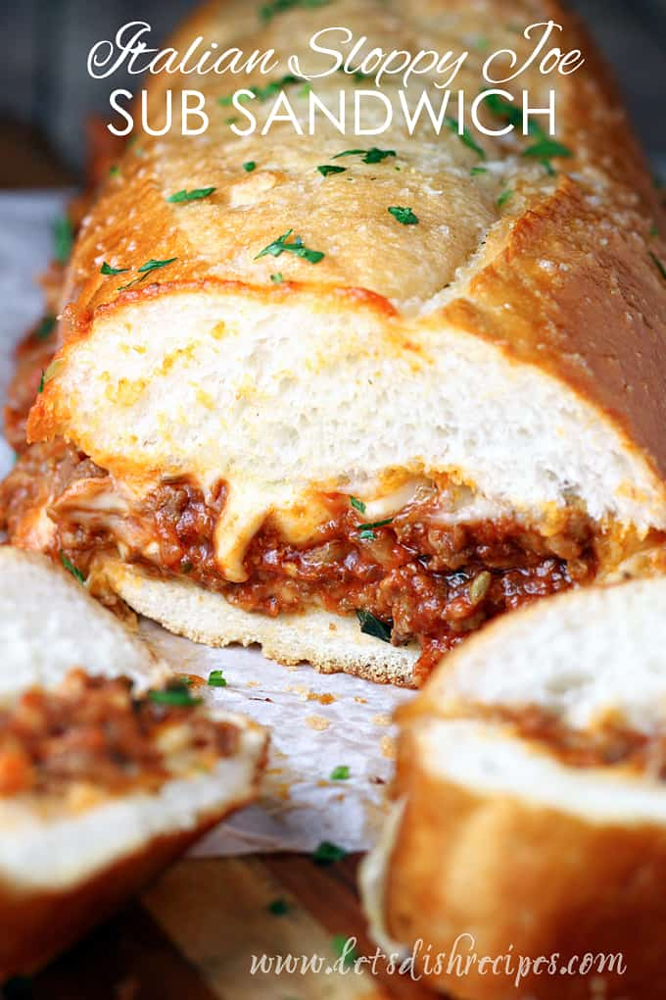

Italian Sloppy Joe Recipe

A delicious looking Italian Sloppy Joe
If you’re looking for something filling and hearty to feed a crowd, or just some hungry teenage boys, look no further than these Italian Sloppy Joe Sub Sandwiches!
Ingredients
- Ground beef
- Ground sausage
- Produce: onion, garlic, fresh parsley
- Tomato sauce
- Tomato Paste
- Parmesan Cheese
- Spices: oregano, fennel seed, Italian seasoning, garlic salt, red pepper flakes, salt and pepper
- Sugar
- Butter
- Italian Bread
- Sliced Mozzarella Cheese
Steps
- Preheat oven to 350 degrees. In a large saute pan or Dutch oven, cook ground beef, sausage, onion and garlic until meat is no longer pink; drain.
- Add tomato sauce, tomato paste, oregano, fennel, Italian seasoning, red pepper flakes, sugar and salt and pepper to taste. Simmer for 15 minutes or until sauce has thickened, stirring occasionally. Stir in fresh parsley.
- Meanwhile, cut bread in half lengthwise. Stir garlic salt into melted butter.
- Arrange half of the cheese on the bottom halves of the bread. Top with meat mixture, dividing it evenly between the two loaves. Top meat with remaining cheese slices. Replace the bread tops and brush with the butter and garlic salt mixture.
- Wrap each loaf in foil. Bake for 25-30 minutes or until cheese is melted and sandwiches are hot. Cool slightly before slicing and serving.